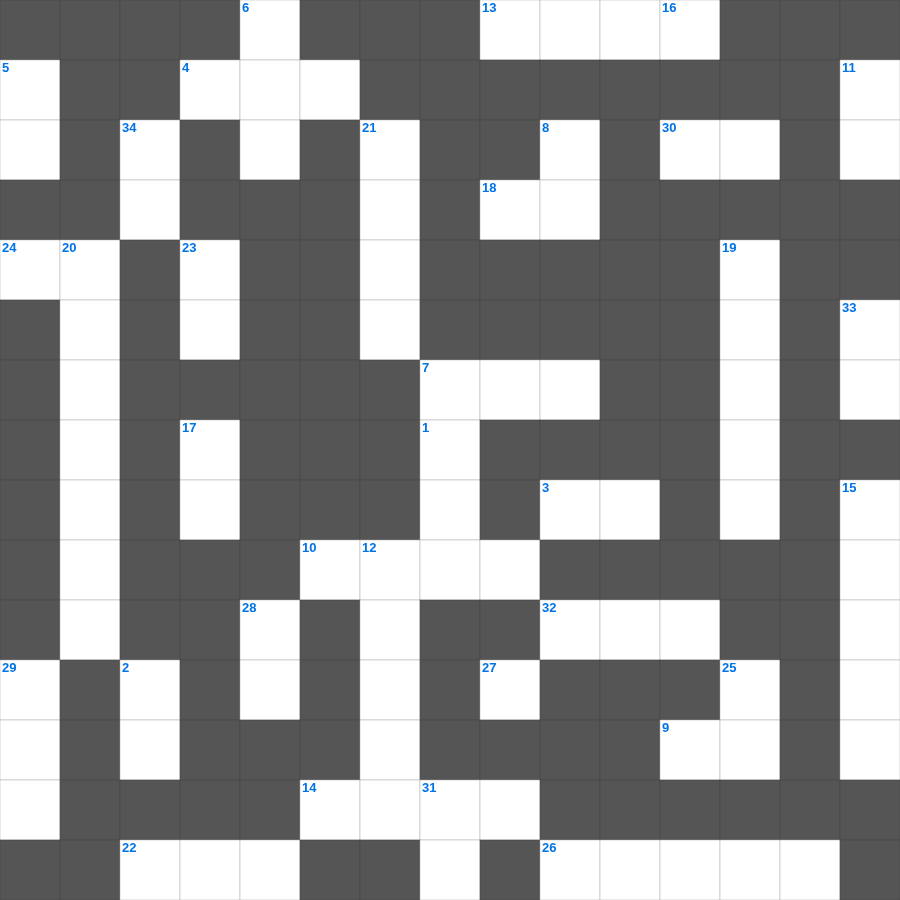

신명기: 복과 저주
📌 서비스 정의
십자가로세로는 교회 주보와 주일학교에서 사용할 수 있는 성경 기반 가로세로 퍼즐 서비스입니다. 성경 인물, 사건, 핵심 구절을 바탕으로 제작되었습니다. 온라인 풀이 및 인쇄 기능을 제공합니다.
신명기의 말씀을 퀴즈로 배우는 신명기 성경 퍼즐입니다. 가로 힌트와 세로 힌트를 보고 35개의 단어를 맞춰보세요. 인쇄도 가능하고 정답 확인도 바로 되니 소그룹 모임이나 가정 예배 시간에도 활용하실 수 있습니다.

📝 가로 힌트
1. 낮을 주관하게 하신 큰 광명체
3. 가난한 과부가 드린 두 이것
4. 함께 가져온 물고기의 마리 수
7. 대제사장의 흉패에 박힌 열두 보석 중 하나
9. 하나님을 경외하는 것이 이것의 근본
10. 범사에 이것하라 이는 그리스도 예수 안에서 너희를 향하신 하나님의 뜻이니라
13. 바울이 감옥에서 쓴 서신들
14. 예수님이 산 위에서 전하신 복음의 핵심
18. 제사장이 입는 거룩한 옷
22. 부지중에 지은 죄를 속하기 위한 제사
24. 예수님이 구름을 타고 하늘로 올라가심
26. 아브라함의 고향
27. 의인의 간구는 역사하는 이것이 큼이니라
30. 이것하는 자는 복이 있나니 저희가 위로를 받을 것임
32. 예수님의 옷자락을 만져 나은 병
📝 세로 힌트
2. 이스라엘 열두 지파를 상징하는 보석들
5. 제물을 통째로 태워 드리는 제사
6. 광야에서 엘리야에게 떡과 고기를 물어다 준 새
7. 모세가 홍해를 가르고 마른 땅처럼 건넌 일
8. 제사장이 입던 겉옷
11. 실로암 못에서 눈을 씻고 보게 된 사람
12. 야곱이 형의 낯을 피해 도망가다 꿈을 꿈
15. 구하라 그리하면 너희에게 이것을 주실 것이요
16. 너는 나 외에는 다른 이것들을 두지 말라
17. 하나님과 대화하는 것
19. 웃사가 법궤를 만지다 죽은 사건
20. 어린아이들이 내게 오는 것을 금하지 말라
21. 이스라엘의 수도이자 거룩한 성
23. 부활하신 날은 안식 후 이것
25. 주 예수의 이것이 모든 자들에게 있을지어다
28. 바울의 고향
29. 노아의 방주에 탄 사람의 총수
31. 다윗이 연주하던 악기
33. 새 예루살렘 성곽의 첫 번째 기초석
34. 모든 것 위에 믿음의 이것을 가지고
🧑🏫 교회 교육 자료 활용
이 퍼즐은 주일학교 교재 추천 자료로 활용할 수 있고, 주일학교 주보에 넣기 좋은 분량으로 구성되어 있습니다. 수업용 주일학교 교안에 활동지로 붙이거나, 예배 후 복습용 주일학교 공과교재로 바로 사용할 수 있습니다.
🏷️ 키워드
신명기 성경 퍼즐, 신명기, 십자가로세로, 성경퀴즈, 말씀퀴즈, 가로세로퍼즐, 주일학교 교재 추천, 주일학교 주보, 주일학교 교안, 주일학교 공과교재